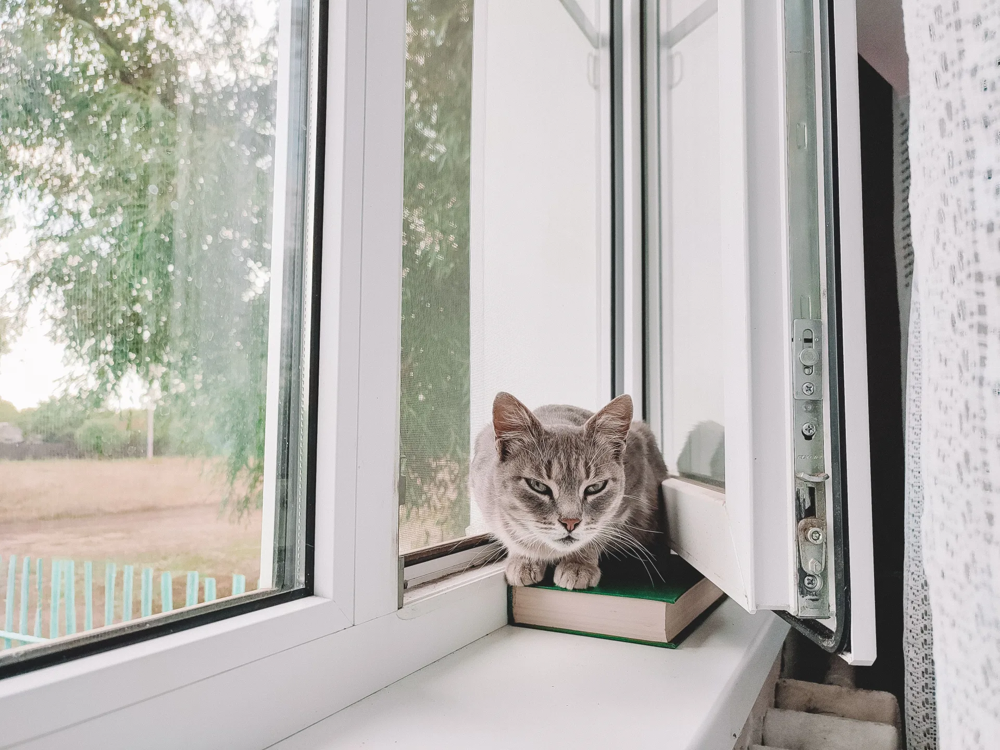

Москитная сетка не удерживает человека
Москитная сетка защищает от насекомых, но не от падения — даже усиленный вариант нельзя считать опорой. Объясняйте это детям и ограничивайте опасное открывание. Не оставляйте ребёнка без присмотра рядом с открытым окном.
Чем отличаются устройства
Ручка с ключом блокирует управление; замки и ограничители могут сохранять отдельные режимы проветривания. Возможности зависят от модели. Попросите показать, что устройство блокирует: обычный ограничитель для удобства не обязательно предназначен для детской безопасности.
Проверьте совместимость и монтаж
Устройство должно подходить профилю и фурнитуре. Для существующего окна требуется проверка мест крепления. Монтаж выполняют по инструкции; взрослый проверяет работу и состояние креплений. Храните ключи вне доступа детей и уточните правила обслуживания.
Организуйте пространство у окна
Уберите от окна мебель, по которой ребёнок может забраться на подоконник. Не используйте его для игр. Проверьте все доступные окна и балконную дверь. Замки не заменяют присмотр, а безопасное стекло не защищает от выпадения через открытую створку.
Вопросы перед заказом
Уточните возможности устройства до заказа.
- Для какой задачи предназначено выбранное устройство?
- Какие режимы открывания оно блокирует и какие сохраняет?
- Совместимо ли оно с нашей конструкцией и кто его устанавливает?
- Как проверять исправность и где хранить ключи?